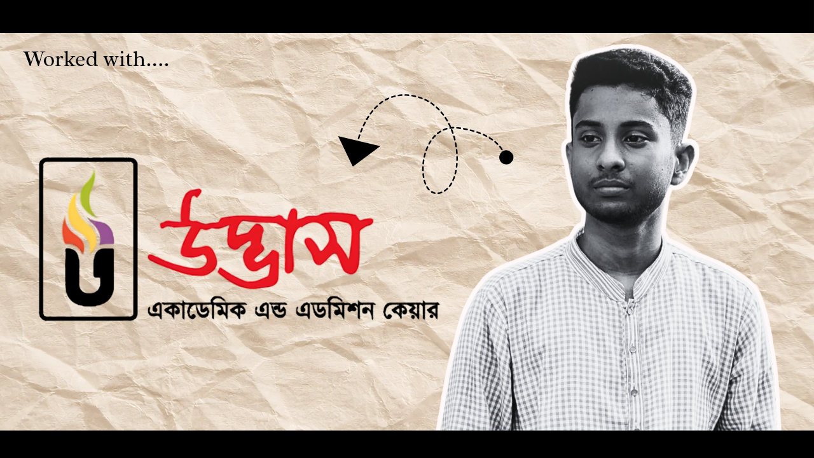

← Back to selected experienceFarhan Sadique / Experience
Teaching, assessment,
and tutoring.
My experience includes teaching, evaluating exam scripts, tutoring, and coordinating volunteer classes near CUET.
01 / Teaching

QnA Teacher
Udvash Academic & Admission Care
I currently teach QnA for the Medical Physical Department and SSC, answering students’ questions and helping them work through difficult concepts.
02 / Assessment

Script Evaluator
ACS Achieve Offline Exam Centre · Chittagong Branch
I evaluate exam scripts as part of the centre’s assessment work.
03 / Mentoring

Private Tutor
I have three years of teaching experience with students in classes 9–12.
I tutor one to one alongside my Urban and Regional Planning studies.
04 / Volunteering

Volunteer Coordinator & Instructor
Prodip School
I coordinate and teach at Prodip School, a free education initiative near CUET. Three days a week, the school offers foundational lessons to children from low-income backgrounds.
I work with a team of volunteer teachers to keep classes consistent and support students as they learn.
Prodip School on Facebook ↗
Online classes
Get in touch ↗